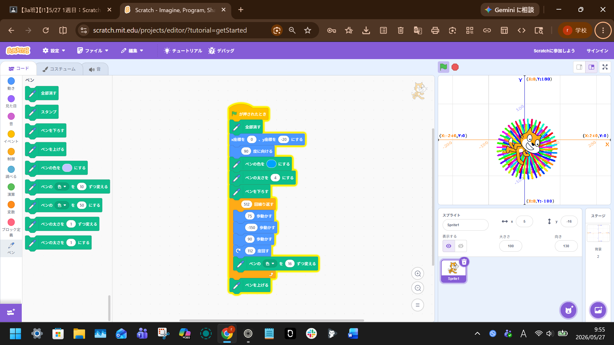
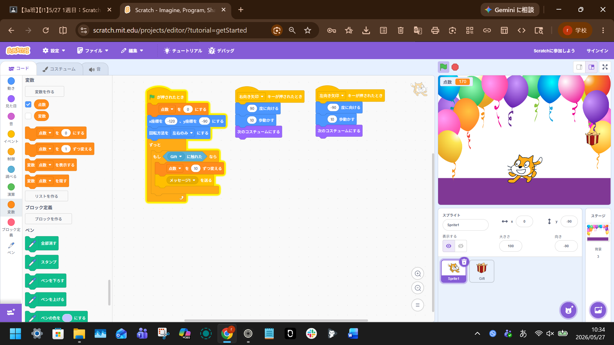

1週目のレポート ： 公大高専１年実習I-1
3a班09番 ric8a
第1週目
1-1 サイエンスアート

1.内容
スクラッチでサイエンスアートを作成する。動き・見た目・音・イベント・制御ブロックなどを使って、プログラムを組み合わせて自分が目的とする動きを実現する。
2.感想
スクラッチで、ラインアートを作成した。スクラッチ自体は、小・中ともに聞いたことがあったが、実際に体験するのは初めてだった。
しかし、いざやってみると難しそうなイメージと異なり、簡単で自分で直感的にラインアートを描くことができた。
1-2 ゲーム

1.内容
スクラッチを使って、リンゴキャッチゲームを作成して自分で体験する. 今回は、自分でスキンもカスタマイズして、動きを実現する。これらを行うためのブロックの、使い方や用例を理解する。
2.感想
今回は、イベントブロックを駆使して、キー操作を割り当てた。また、自分でスキンをカスタムしてキャラクターを作成し、思い通りのゲームを作成した。疑問と課題は休み時間に作ったジャンプについてであり、どうやっても思った通りの挙動が実現できなかったことだ。
1-3 ホームページ作成
私のホームページ
1.内容
.html形式のファイルをGithubで編集し、自分のサイトとして実装した。また、今回はテンプレートを編集する形式で、もともとの文を消して上書きする形で簡単な自己紹介を書いた。
2.感想
ひとまず自分の思った通りのサイトになるように編集はできたがエラーで更新がうまくいかずに行き詰った。そこから、次回の課題はエラーの改善方法と改行の仕方が分からないので質問することだ。
各ページへのリンク
1週目のレポート
2週目のレポート
3週目のレポート
私のホームページ